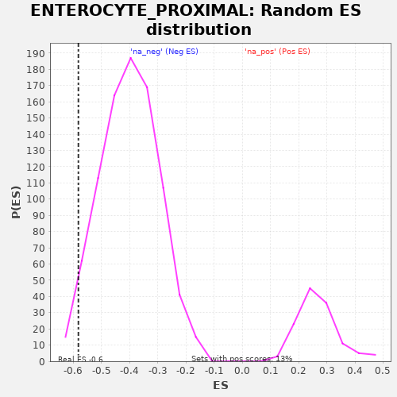

| | | Dataset | al5_v_al2 |
| Phenotype | NoPhenotypeAvailable |
| Upregulated in class | na_neg |
| GeneSet | ENTEROCYTE_PROXIMAL |
| Enrichment Score (ES) | -0.58223045 |
| Normalized Enrichment Score (NES) | -1.4528581 |
| Nominal p-value | 0.036655214 |
| FDR q-value | 0.03782283 |
| FWER p-Value | 0.268 |
Table: GSEA Results Summary
 Fig 1: Enrichment plot: ENTEROCYTE_PROXIMAL
Fig 1: Enrichment plot: ENTEROCYTE_PROXIMAL
Profile of the Running ES Score & Positions of GeneSet Members on the Rank Ordered List
| PROBE | GENE SYMBOL | GENE_TITLE | RANK IN GENE LIST | RANK METRIC SCORE | RUNNING ES | CORE ENRICHMENT | | 1 | Rbp2 | | | 500 | 0.080 | -0.0642 | No |
| 2 | Dhrs1 | | | 698 | 0.060 | -0.0782 | No |
| 3 | Adh6a | | | 1835 | -0.007 | -0.2947 | No |
| 4 | Aldob | | | 1974 | -0.012 | -0.3164 | No |
| 5 | Cyb5b | | | 2261 | -0.024 | -0.3618 | No |
| 6 | Fabp1 | | | 2431 | -0.031 | -0.3817 | No |
| 7 | Gpd1 | | | 2557 | -0.037 | -0.3908 | No |
| 8 | Khk | | | 2875 | -0.052 | -0.4311 | No |
| 9 | Slc5a1 | | | 2916 | -0.054 | -0.4172 | No |
| 10 | Retsat | | | 3763 | -0.097 | -0.5415 | Yes |
| 11 | Scp2 | | | 3960 | -0.111 | -0.5345 | Yes |
| 12 | Ms4a10 | | | 4208 | -0.131 | -0.5294 | Yes |
| 13 | Ckb | | | 4333 | -0.146 | -0.4946 | Yes |
| 14 | Ckmt1 | | | 4339 | -0.146 | -0.4367 | Yes |
| 15 | Lpgat1 | | | 4389 | -0.153 | -0.3846 | Yes |
| 16 | H2-Q2 | | | 4477 | -0.163 | -0.3356 | Yes |
| 17 | Mttp | | | 4566 | -0.177 | -0.2810 | Yes |
| 18 | Acsl5 | | | 4585 | -0.181 | -0.2116 | Yes |
| 19 | Cyb5r3 | | | 4772 | -0.218 | -0.1597 | Yes |
| 20 | Prap1 | | | 5195 | -0.600 | 0.0008 | Yes |
Table: GSEA details [plain text format]

Fig 2: ENTEROCYTE_PROXIMAL: Random ES distribution
Gene set null distribution of ES for ENTEROCYTE_PROXIMAL